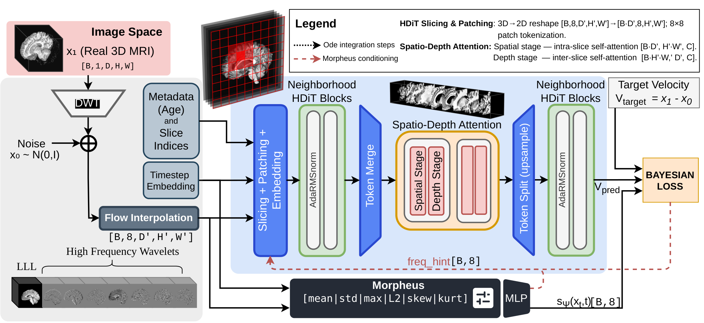
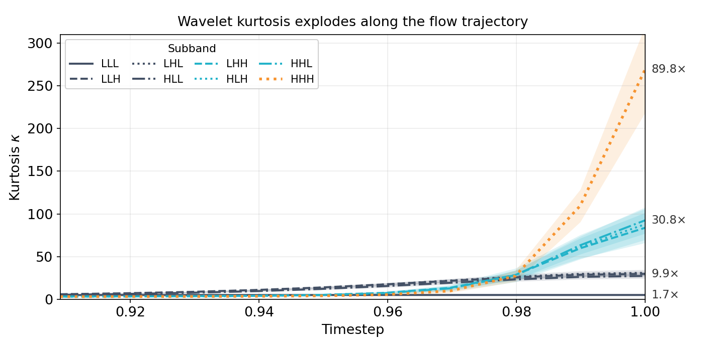
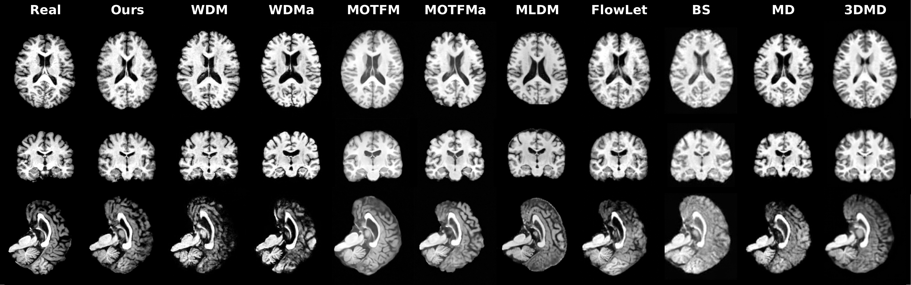

1 Politecnico di Bari, Italy · 2 Sapienza University of Rome, Italy
* Corresponding author
The MICCAI 2026 proceedings paper is the peer-reviewed version of record (link forthcoming). An earlier arXiv preprint will also be available and may differ from the camera-ready version.

Highlights
Conditional flow matching in an invertible 3D wavelet domain, made distribution-aware: a state-aware uncertainty scheduler adapts precision to the heavy-tailed statistics of high-frequency anatomy.
Generative modeling directly on the 8-channel 3D Haar latent (1 low-frequency + 7 high-frequency subbands), full-resolution and learning-free, no lossy latent compression.
A state-aware scheduler predicts per-band log-variance from higher-order wavelet statistics, driving a Bayesian heteroscedastic loss and a frequency-aware conditioning hint.
The Hourglass Diffusion Transformer extended to 3D with neighborhood and factorized intra-/inter-slice attention, avoiding the cost of full 3D self-attention.
Deterministic second-order Heun integration generates a full 3D volume in about one second using only 10 steps.
Global distributional metrics, a downstream brain-age prediction study, and region-level analysis over 95 cortical and subcortical structures.
Trains directly on full-resolution, native 182×218×182 volumes, full voxel detail with no downsampling and no lossy latent compression. ~142M parameters in ~26 h on a single H100 (~12 GB at batch size 1), and the single-file YAML scales the architecture up or down with one edit.
Abstract
Large and demographically balanced datasets are essential for reliable neuroimaging biomarkers. Full-resolution 3D brain MRI synthesis can support data augmentation in this setting, but existing approaches either incur prohibitive computational cost at volumetric scale or rely on lossy latent compression that may compromise anatomical detail. As a result, practical 3D generative augmentation often requires specialized compute infrastructure. We propose WaveDiT, a conditional flow matching framework operating in the coefficient space of a 3D Haar Discrete Wavelet Transform. The model combines factorized spatio-depth attention with band-wise heteroscedastic uncertainty modeling derived from higher-order wavelet statistics. Predicted log-variance is integrated directly into both the flow objective and conditioning pathway, enabling adaptive precision consistent with the heavy-tailed and input-dependent variance structure of anatomical detail. This formulation supports full-resolution 3D synthesis under practical memory and time constraints on a single modern GPU. Evaluation on a multi-site cohort demonstrates improved alignment between generated and real MRI distributions, together with enhanced downstream brain age prediction and region-level anatomical agreement relative to diffusion, latent, and wavelet-based baselines.
The challenge
Decomposing a brain volume into wavelet subbands exposes sharply different statistics across bands, and those statistics evolve along the generative trajectory. Treating every band and voxel with a uniform loss is a poor fit.
Approximation coefficients stay near-Gaussian, but high-frequency bands become sparse and strongly leptokurtic, with the isotropic HHH band reaching a kurtosis of ~270 near the data.
High-frequency local variance spans roughly eight orders of magnitude across space, rising at tissue boundaries and falling in homogeneous regions, i.e. it is strongly heteroscedastic.
Fixed-precision MSE over-penalizes errors at high-variance boundaries and under-penalizes homogeneous regions, motivating a state-aware, band-wise precision.

The method
A single-stage pipeline: decompose with an invertible 3D Haar transform, learn a velocity field in wavelet space with a slice-wise transformer whose precision is modulated by a state-aware uncertainty network, then reconstruct with the inverse transform. Everything is trained end-to-end on full-resolution, native 182×218×182 volumes (no downsampling, no learned latent compression), and the entire architecture scales up or down from a single YAML config.
Each volume is split into one low-frequency approximation subband and seven directional high-frequency subbands, an 8-channel latent at half resolution, lossless and learning-free.
A slice-wise HDiT predicts the flow-matching velocity with neighborhood and factorized spatio-depth attention; Morpheus predicts per-band log-variance for a Bayesian heteroscedastic loss and a frequency hint.
The generated wavelet coefficients are mapped back to a full-resolution volume by the inverse transform, no learned decoder and no compression artifacts.
The volume is treated as a batch of 2D slices: shallow layers use local neighborhood attention, deeper layers apply intra-slice then inter-slice (depth) attention to restore volumetric coherence at a fraction of full-3D cost.
Velocity prediction is modeled with an input-dependent variance, so the loss down-weights inherently unpredictable high-frequency content while a log-variance term prevents trivial inflation.
The predicted log-variances are projected into a frequency hint and combined with time, slice and age embeddings, letting the backbone adapt to each band's current reliability.
Inside the model
Unlike schedulers that look only at the timestep, Morpheus reads the statistical signature of the current noisy wavelet state and predicts a per-band log-variance that steers both training and sampling, so the model spends its capacity where the signal is actually predictable.
For each wavelet band it extracts mean, standard deviation, max amplitude, L2 energy, skewness and kurtosis, concatenated with a time embedding, capturing how heavy-tailed each band is at the current step.
The predicted log-variance forms a Bayesian heteroscedastic objective that down-weights inherently unpredictable high-frequency content, while a log-variance term prevents trivial variance inflation, giving state-dependent precision instead of uniform MSE.
The same log-variances are projected into a frequency hint and injected alongside time, slice and age, so the transformer adapts its prediction to the current reliability of each band, during training and sampling alike.
Results
On a multi-site cohort of 5,989 cognitively-normal subjects, WaveDiT-CFM leads on global fidelity while also improving the downstream and region-level endpoints that matter clinically, at a fraction of the sampling and training cost.

WaveDiT-CFM achieves the best ROI scores across all 95 cortical and subcortical structures, with the highest Dice and lowest KL divergence among the compared methods.
The lowest FID and MMD among all methods at only 10 sampling steps, improving over the conditioned wavelet baseline and over 1000-step diffusion.
Augmenting training with WaveDiT samples yields the lowest brain-age MAE (2.44 years), below models trained on real data alone under the same protocol.
Perspective
In volumetric brain MRI a single global score can quietly mislead. A large fraction of voxels are background, so distribution-level metrics such as FID and MMD can look favorable even when clinically relevant anatomy is wrong, and a generator can be rewarded simply for drifting toward an "average" brain.
This is why WaveDiT is evaluated with a multi-level protocol. Some baselines reach competitive FID yet show markedly weaker regional structure, lower Dice and higher KL divergence, exactly the discrepancy that global numbers hide. Only when global fidelity, a downstream brain-age prediction task, and region-level agreement over 95 structures are read together do they give an honest, anatomy- and task-aware picture of generative quality.
WaveDiT builds directly on the wavelet-domain analysis and multi-level evaluation introduced in FlowLet, pushing that line of work further toward distribution-aware, full-resolution 3D generation: a transformer backbone and a state-aware uncertainty scheduler that adapt to the heavy-tailed statistics of the wavelet bands.
Code & data
The complete PyTorch implementation, training/generation scripts, and configuration files are released openly.
The reference release of WaveDiT: training, generation, and self-contained checkpoints.
github.com/sisinflab/WaveDiTOngoing development, experiments, and future enhancements.
github.com/danesed/WaveDiTA multi-site cohort built on OpenBHB, ADNI and OASIS-3: 5,989 cognitively-normal T1w subjects spanning ages 5.9 to 95.5.
Global metrics (FID, MMD, MS-SSIM), a downstream brain-age prediction study, and region-based ROI analysis over 95 structures.
Released under the MIT License for research and reuse.
Citation
If you find WaveDiT useful, please cite the paper.
% arXiv preprint
@article{danese2026wavedit,
title={WaveDiT: Distribution-Aware Wavelet Flow Matching for Efficient 3D Brain MRI Synthesis},
author={Danese, Danilo and Lombardi, Angela and Fasano, Giuseppe and Attimonelli, Matteo and Di Noia, Tommaso},
journal={arXiv preprint arXiv:XXXX.XXXXX},
year={2026}
}
Acknowledgements
WaveDiT builds on the wavelet-domain analysis and multi-level evaluation protocol of our previous work, FlowLet. The HDiT backbone is adapted from the great work of k-diffusion.